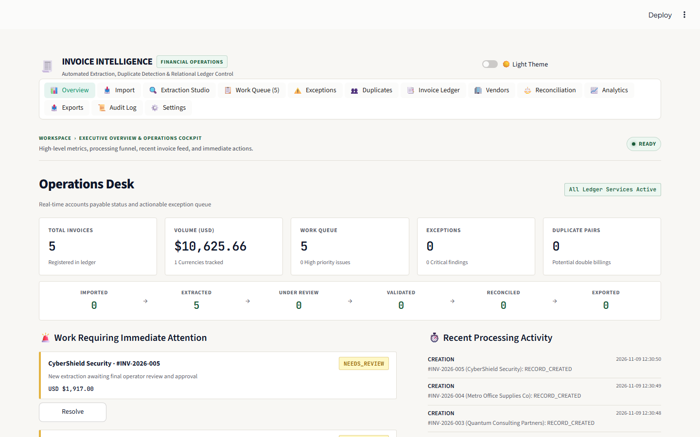

01 OpenCV + OCR
AP Document Intelligence Platform
Invoice Intelligence
8-stage Accounts Payable platform across 13 Streamlit workspaces using OpenCV deskewing/Otsu binarization, Tesseract 5.4 OCR with Green/Amber/Red confidence bboxes, reverse-token table parsing, math reconciliation, and formula-safe Excel export.